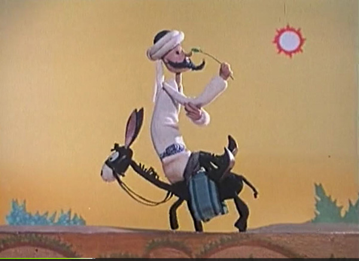

Soup of the Soup
September 8, 2026
My mother was vacuuming that spring afternoon when I stood up from the kitchen table and asked her to look over the math homework I had just completed. Despite the vigilance my parents maintained over the ritual of school, I had been a middling B-student up until this point, and therefore was still subject to a high level of supervision. My mother turned off the vacuum, sat down, and after a few minutes said, "Ask your father to check this. I don't understand it." I was around 14 then and just beginning my days as a high schooler. Within weeks, the gentle pressure of their parenting dissipated. They suddenly realized I could handle my studies without their oversight.
The lifting of that weight revealed a freedom that led me outside the fenced-in pastures of childhood and into the wilder woods of adolescence. After school I could be found scrambling on the cliffs of a nearby canyon, looking for a cave sheltered from watchful eyes where I could share a Swisher Sweet or Black & Mild with new friends. If the snow had dumped overnight, I would ditch class to go skiing that day, and even cut under the ropes if a stretch of powder looked tantalizing enough. And finally, on Friday evenings, freed from the drudgery of five days of biology, government, and history, I would retire to the home of my childhood friend Kevin.
From there we would set off on moonlit hikes to the tees of the nearby 7th hole, or host whiskey-fueled footraces on the dirt roads outside his front door. There were countless episodes around a poker table shoving cards under the tab of a beer can. The last person to play a card before it burst had to finish the drink. Of course, we invited girls over too, but I was still years away from being seen as anything more than a friend. The maturing figures of those young women in the lingering light of my boyhood cast imposing shadows that made me feel all the more childish.
Kevin's mother was exhausted from daylighting as a dental hygienist and maintaining her Sisyphean effort to scrape the muck off the teeth of negligent brushers. She slept soundly, only occasionally emerging bleary-eyed from a dark bedroom to tell us to turn it down. Kevin's father wasn't around. He was either flying helicopters in training exercises or piloting a plane for NetJets, a private airline for the class of rich who could afford to charter a plane but not to own one. He would come home every few weeks spinning tales of meeting Tom Cruise or Lynyrd Skynyrd, and we would fawn over our proximity to fame.
Before NetJets, Kevin's father was in the military. He flew Black Hawks on several tours in the Middle East, although I'm not sure if it was in Afghanistan or Iraq. I have a memory of him landing a Black Hawk in the middle of the track at our school. This was a few years after 9/11. In front of the assembled schoolchildren sitting crisscross applesauce on the grass, a black hunk of metal dropped out of the sky and alighted gently on the earth. In the eyes of a child, it was amazing, incredible, unexplainable. It wasn't until years later that I began to compare it to something of a military parade.
Shortly after, Kevin's father went back to the Middle East as America's involvement in Afghanistan continued. Kevin said his dad was in the desert hunting towel heads. This was around the same time that ventriloquist Jeff Dunham had popularized a routine with a skeletal, turban-clad puppet known as Achmed the Dead Terrorist. Kevin and I would parrot, ad nauseam, Achmed's lines after watching every YouTube video we could find that featured the pair. Kevin could even reproduce two- to three-minute stretches of the performance.
I was young for my class with a birthday in late August, so I was one of the last to get my driver's license. I lived not far from a boy in my class named Stan whom I was always pestering for a ride home. This pestering eventually became a friendship. Stan was usually accompanied by his counterpart and our mutual friend Garrett. They made for cartoonish partners, one tall and skinny, the other short and, well, still skinny. Garrett had a drum kit in his room and Stan had a pug named Puggy who slept at the foot of his bed. They were always together, cruising around the town like undercover cops behind the tinted glass of Stan's black sedan. While Kevin and I were riding mountain bikes, going skiing, and playing soccer, Stan and Garrett were in the basement playing CoD Zombies, making midnight trips to King Soopers for Mountain Dew and liquified cheese, and listening to indie music on the only radio station in Denver that we thought was cool.
After class Stan would drive me home, and we'd pass a gas station in the one-stoplight town that had jurisdiction over our addresses. Stan would often pull into the cracked asphalt parking lot to buy a fountain drink. The employees who worked there spoke Arabic. Stan called them sand n******, a phrase he said he learned from his father. Never to their face, of course. Garrett and I would laugh, but we didn't really know what it meant. That year, there were no black students at my high school.
The first time I went to Stan's house I remember Garrett wasn't there. We were playing out some adventure in the forest, just the two of us. In this rural suburb everyone had a few acres of land: some grassland, some woodland. We were traipsing through the undergrowth when a shrill whistle unexpectedly sounded through the forest. Stan looked at me, his mouth slightly agape, and then said, "Shit, we better run." There was real fear in his eyes and real urgency in his voice. Our footsteps became a reckless crashing, our goal a gated chicken coop. I heard snarling and barking all around us, and Stan nearly closed the door of the pen before I made it inside. Something was telling me this wasn't a game.
After securing the latch Stan stepped back and we saw our pursuers. Two Rottweilers, each as big as a full-grown man, stood on their hind legs with their front paws on the fence. They jawed at us, and Stan yelled back at them until they went whining into the early dusk. One of them was named Lucy. She died of cancer a few years later and Stan was heartbroken.
I later learned that the whistling sound came from Stan's father. He was a big man who worked as a construction contractor and never said a word to me. He liked to spit his dip juice down the straw of a Big Gulp cup, and one of his favorite tricks was to swap Stan's soda for the spit. Then he would chortle and guffaw as Stan ran for the bathroom.
Every year from birth until I graduated from high school, my father would wake us up on a fall morning at 5 a.m. so we could pile into the car and drive from Denver to Bloomington, Indiana. My father loved to drive. I think the endless horizons of the American countryside helped him forget about work for a while. His parents, my Afghan grandfather and Czechoslovakian grandmother, had built their home near Indiana University, where my grandfather taught. For me, the Midwest was one giant forest carpeted in bronzed, fallen leaves where we eternally celebrated Thanksgiving.
My father's older sister and two older brothers would bring their kids as well. My father had married an American, and his siblings an Australian, a German, and another American. That left all my cousins looking like me: mutts. There were twenty or more of us who would fill the rooms of my grandparents' house and most of the younger cousins, myself included, would sleep on an Afghan rug on the floor.
I remember my uncle, Sulaiman, and my father, born Iskandar, driving my sister and me around in the evenings while they spun us tales of the semi-mythical folk character Mullah Nasruddin. My father and his brother were goofy, a trait I lovingly inherited from them, and they lovingly inherited from their father. The stories went something like this:
A neighbor brought Mullah Nasruddin a fresh duck as a gift. Nasruddin was grateful, cooked the duck, and shared the meal with him.
The next day, a stranger knocked on the door and introduced himself. "I am a friend of the man who gave you the duck," he said. Nasruddin offered him a place at the table and served him a bowl of duck soup.
The following day, another stranger arrived. He announced, "I am a friend of the friend of the man who gave you the duck." Nasruddin, being a good host, offered him a seat and served him a bowl of broth.
On the third day, a third stranger showed up. "I am a friend of the friend of the friend of the man who gave you the duck."
Nasruddin smiled, sat the man down, and placed a bowl of hot water in front of him.
The man looked at the bowl, confused. "What is this?"
"That," replied Nasruddin, "is the soup of the soup of the soup of the duck."

Apart from those stories, the occasional meal of lamb or kichiri quroot, and my grandfather's karakul cap perched on a heavily bound Quran in the dining room, there was little Afghan influence in my childhood. My grandfather, grandmother, and the four children who made up my aunts and uncles all fled the country on the wings of a Volkswagen beetle in the 70s. Two generations removed from that arid land endowed me with blond hair, blue eyes, and fair skin. The soup has thinned out.
However, in these last few years something has drawn me to the Western steppes of the Asian continent. I have stumbled upon mentions of the Mullah, whose name rang like a glass bell in my ears and summoned me back to those car rides with my uncle. From Taiwan, I have heard that in 新疆 (Xīn jiāng) they tell tales of 阿凡提 (Ā fán tí), a Chinese transliteration for Mullah Nasruddin.2 These incidents have twisted time into a spiral, as I feel closer to a memory than the linearity of time should allow. The lingering flavor of the soup is still strong enough to draw me towards its source.